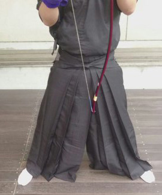
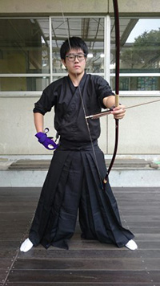
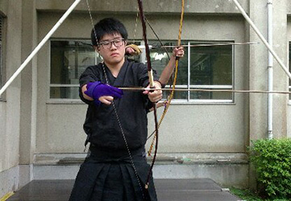
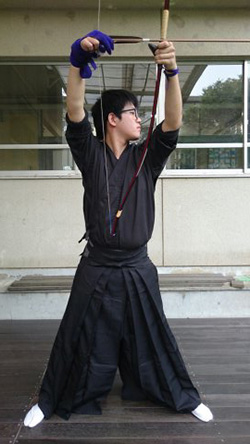
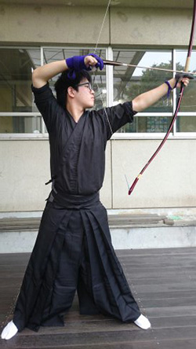
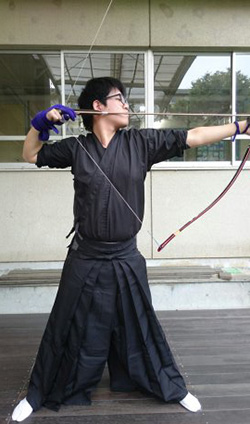
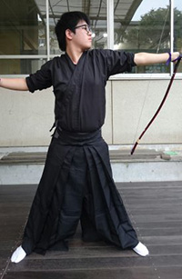

射法八節
射法八節とは弓道をする上での基本となる動作のことです。 今回はこういう動作があるということだけ分かってもらえれば良いです。 詳しいことはきちんとした先生に教えてもらってください。
壱.足踏み
弓を引く上でその基礎となる足の構え方のことです。 足を逆八の字に開きその角度は約６０度です。 足の間隔は自分の使っている矢の長さ位が丁度良いです。
弐.胴作り
足踏みを足の構え方とすると、胴造りは体の構え方です。 画像を見ると分かりやすいと思いますが、一見すると簡単 な動作のように見えますがこの胴造りが崩れると矢は的に当たりません。
参.弓構え
簡単に言いますと、弓を構える動作のことです。 動作は簡単ですが、その動作を怠ると矢は当たりません。
肆.打ち起こし
弓を引く前に弓を上に持ち上げる動作のことです。
伍.引き分け
打ち起こした弓を左右均等に引く動作のことです。
陸.会
画像の通りですが、矢が放たれる一歩手前の状態のことです。 この動作はものすごく重要なものなのですが、それを説明する 皆さんが混乱してしまうので省略させてもらいます。
漆.離れ
矢を離す動作のことです。
捌.残心
矢の離れた後の姿勢のことです。離れの姿勢を崩さないことが重要です。
最後に実際に引いてる動画を載せておきます。(音量注意)
*このページの写真、動画に写っている人物には許可をもらって撮影、掲載しています。
出典・脚注
参考文献
・『弓道教本 1巻 射法篇』http://www.sambu.jp/SHOP/K-001.html